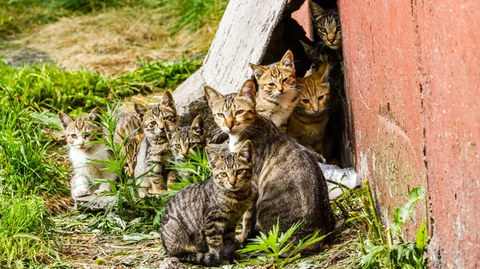

Selecione o conteudo que deseja ler no menu acima

Taxonomia
A classificação taxonómica e a história evolutiva dos gatos ajudam-nos a entender como esses animais se tornaram uma das espécies domésticas mais bem-sucedidas do planeta. A evolução dos gatos não apenas ilustra sua adaptação física, mas também comportamental. Por exemplo, estudos indicam que a capacidade dos gatos de interpretar sinais humanos, como apontar ou olhar, demonstra um nível de inteligência que facilita a convivência. A distribuição global dos gatos é também um testemunho de sua adaptabilidade. O estudo da evolução felina revela muito sobre sua adaptabilidade. Por exemplo, evidências paleontológicas mostram que o gênero Felis evoluiu em resposta a mudanças climáticas e pressões ambientais, levando ao surgimento de comportamentos que garantem sua sobrevivência mesmo em cenários desafiadores. Essa evolução também explica sua notável habilidade de integração em ambientes urbanos modernos. Além disso, estudos sobre a diversidade genética dos gatos selvagens em comparação com gatos domésticos revelam padrões que continuam a enriquecer a compreensão científica sobre domesticação.

Anatomia
Os gatos possuem uma anatomia adaptada para a caça. Seu esqueleto flexível e musculatura poderosa permitem movimentos ágeis e rápidos. Nesta seção, detalha-se a fisiologia sensorial dos gatos, incluindo a visão noturna aprimorada e audição sensível, características que os tornam caçadores eficientes. Também discutimos o sistema digestivo especializado para uma dieta carnívora. Além dos sistemas principais mencionados, os gatos possuem uma fisiologia adaptada a condições extremas, como calor e frio. O pelo dos gatos desempenha funções não apenas térmicas, mas também de comunicação social, com variações de cor e padrão frequentemente associadas a interações sociais. Além de suas capacidades físicas, os gatos possuem estruturas sensoriais únicas, como os bigodes, que funcionam como radares biológicos. Esses bigodes são capazes de detectar alterações mínimas no ambiente, ajudando o animal a navegar e a caçar com precisão. Seu sistema esquelético é outro ponto de interesse, sendo composto por mais de 230 ossos, que garantem alta flexibilidade. Os mecanismos de regeneração celular nos gatos, particularmente em relação a lesões musculares, também são áreas promissoras de pesquisa, com aplicações potenciais em medicina regenerativa. Essas características físicas, como a habilidade de pular alturas consideráveis, têm inspirado engenheiros a desenvolverem robôs bioinspirados para uso em ambientes hostis. A anatomia dos gatos é projetada para flexibilidade e potência. A sua coluna vertebral extremamente móvel permite movimentos rápidos e precisos, enquanto as garras retráteis oferecem uma vantagem tanto para escalar quanto para capturar presas. Os músculos das patas traseiras são particularmente desenvolvidos, permitindo que os gatos saltem até seis vezes o comprimento do seu corpo. Essa habilidade é crucial tanto para caça quanto para fuga de predadores. Os gatos são carnívoros obrigatórios, o que significa que a sua dieta deve ser rica em proteínas e gorduras animais. O seu sistema digestivo é curto e eficiente, adaptado para processar carne de forma rápida.

Comportamento
Os gatos comunicam-se por meio de uma combinação de vocalizações, como miados, ronronar, e linguagem corporal complexa. Explora-se aqui a territorialidade dos gatos, que são animais geralmente solitários e defensores de seu espaço. Além disso, é analisado o comportamento de caça inato, que se manifesta mesmo em gatos domésticos bem alimentados. Os estudos de comportamento animal com gatos ajudam a entender sua interação social, territorialidade e comunicação. Esses estudos fornecem informações valiosas para melhorar a convivência entre gatos e humanos e para desenvolver técnicas de manejo mais eficientes. A complexidade do comportamento felino abrange aspectos de aprendizado. Por exemplo, a capacidade dos gatos de resolver problemas é evidente em situações que envolvem alimentação ou interação com brinquedos. Estudos mostram que gatos podem associar eventos a recompensas comportamentais, o que os torna ideais para estudos de comportamento animal. Os gatos demonstram comportamentos que vão além da simples sobrevivência. Estudos comportamentais indicam que os gatos possuem personalidades únicas, variando de indivíduos mais sociáveis a outros que preferem a solidão. Comportamentos como a 'amassagem de pão', frequentemente observados em gatos domésticos, são vestígios de sua infância e demonstram como a convivência humana influencia seu desenvolvimento. Por outro lado, a capacidade dos gatos de aprender comportamentos observacionais reforça sua inteligência e criatividade, que muitas vezes surpreendem mesmo os donos mais experientes. Os gatos são animais territorialistas. Eles marcam o seu território com glândulas odoríferas localizadas na face, patas e cauda. Este comportamento ajuda a minimizar conflitos e a estabelecer limites claros entre os indivíduos. Embora sejam geralmente solitários, os gatos domésticos podem formar laços sociais fortes com outros gatos e com humanos. Eles utilizam uma combinação de vocalizações, posturas corporais e comportamentos específicos para comunicar estados emocionais e intenções.

Saúde
Manter a saúde dos gatos envolve uma alimentação equilibrada, vacinação, e visitas regulares ao veterinário. Esta seção aprofunda as doenças comuns, como problemas renais e diabetes, e destaca a importância de medidas preventivas como a esterilização, que contribui para o controle populacional e redução de riscos de certas doenças Avanços recentes em medicina veterinária têm melhorado a expectativa de vida dos gatos. Além dos cuidados regulares, a saúde mental dos gatos também é um campo emergente, com estudos sugerindo que a interação social frequente pode reduzir comportamentos destrutivos. As práticas veterinárias modernas trouxeram avanços significativos na saúde dos gatos. Por exemplo, as vacinas contra doenças como leucemia felina e panleucopenia têm contribuído para aumentar a expectativa de vida dos gatos domésticos. Além disso, debates sobre nutrição felina destacam a importância de dietas balanceadas e livres de conservantes artificiais. Programas de bem-estar que integram estímulos sensoriais, como sons naturais ou luzes reguláveis, são cada vez mais explorados como formas de enriquecer a vida dos gatos. As visitas regulares ao veterinário são essenciais para prevenir e tratar doenças. Vacinas contra doenças como a raiva e a leucemia felina são obrigatórias em muitos países. Os gatos precisam de uma dieta rica em proteínas de origem animal e aminoácidos essenciais, como a taurina. Deficiências nutricionais podem levar a problemas graves de saúde, como cardiomiopatia dilatada e cegueira. A introdução de dietas especializadas para gatos com condições como diabetes ou obesidade reflete os avanços na nutrição veterinária, promovendo vidas mais longas e saudáveis.

Ciência
Os gatos têm sido utilizados em estudos científicos sobre comportamento, fisiologia e até mesmo em pesquisas médicas relacionadas ao sistema nervoso. Este tópico examina o papel dos gatos como sujeitos em estudos de aprendizado, comportamento e saúde, e também considera questões éticas no uso de animais para experiências científicas. A genética felina é um campo de estudo importante, especialmente em relação às doenças hereditárias. Estudos genéticos com gatos têm ajudado a identificar mutações e a entender doenças como a cardiomiopatia hipertrófica, uma condição comum em felinos que pode afetar humanos. A pesquisa genética contribui para o desenvolvimento de terapias e para o avanço da medicina comparativa. O uso de gatos em estudos científicos continua a gerar debates éticos, mas também avanços significativos. Por exemplo, na área de neurologia, os gatos têm contribuído para a compreensão de distúrbios como epilepsia. A genética felina é outra área que se beneficia, com avanços que podem impactar até mesmo a medicina humana. Na ciência, os gatos continuam sendo modelos valiosos para pesquisas em neurociência e genética. Estudos recentes têm explorado o impacto do estresse crônico nos gatos e como ele pode ser correlacionado com condições similares em humanos, fornecendo insights sobre a saúde mental.

Psicologia
Estudos recentes indicam que conviver com gatos pode ter benefícios psicológicos significativos para os humanos. Por exemplo, ter um gato em casa pode reduzir os níveis de stress e aumentar a sensação de conforto emocional. Gatos são frequentemente utilizados em terapias assistidas por animais. Os gatos têm desempenhado um papel importante em cenários de recuperação pós-trauma, onde sua presença calmante é frequentemente relatada como um fator positivo para pacientes. Além disso, a introdução de programas educacionais que incluem gatos em salas de aula tem demonstrado benefícios tanto para o desenvolvimento cognitivo quanto para a empatia entre crianças.

Sustentabilidade
O impacto dos gatos na fauna local, especialmente em áreas onde são espécies invasoras, é um tema amplamente debatido. No entanto, projetos recentes têm procurado equilibrar a sua presença por meio de programas de organização ética, incluindo a criação de refúgios controlados e campanhas de esterilização.
Tecnologia
A interação entre gatos e tecnologia tem crescido, especialmente com o desenvolvimento de dispositivos inteligentes voltados para o cuidado dos felinos. Desde caixas de areia automatizadas até coleiras inteligentes que monitoram a saúde do animal, estas inovações transformam completamente a maneira como os donos de gatos monitorizam o bem-estar de seus animais. Com o avanço da inteligência artificial, sistemas estão sendo desenvolvidos para interpretar e prever comportamentos felinos. Esses sistemas podem ajudar donos a entender melhor as necessidades de seus gatos, contribuindo para um cuidado mais eficiente. Ferramentas baseadas em aprendizado profundo estão permitindo análises mais precisas dos padrões comportamentais de gatos, auxiliando no diagnóstico precoce de problemas de saúde.

Futuro
Com os avanços em biotecnologia, o futuro dos gatos pode incluir terapias genéticas para tratar doenças hereditárias. Além disso, a relação entre humanos e gatos continuará a evoluir, especialmente num mundo cada vez mais urbanizado, onde os espaços para interação homem-animal estão diminuindo. Por outro lado, é possível que os gatos do futuro sejam ainda mais longevos e saudáveis. A biotecnologia pode possibilitar tratamentos personalizados, e a urbanização crescente pode levar a novas formas de convivência entre humanos e felinos. A urbanização também trará novos desafios, mas os gatos, como sempre, encontrarão maneiras inovadoras de se adaptar e prosperar.